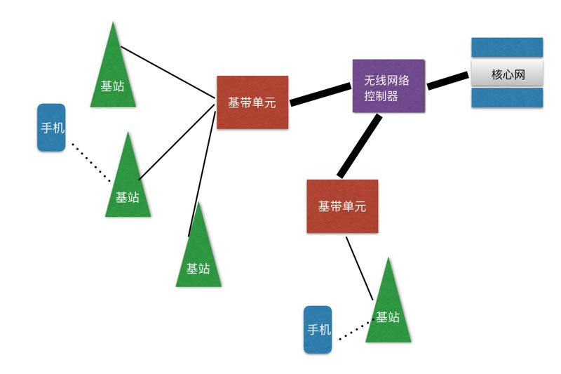

你好，欢迎来到我的《信息论40讲》。
5G在今天是一个非常热门的话题，但想深入了解5G，你就得知道从1G到5G到底发生了什么，从而看出一些技术的趋势，并且知道我们对5G可以有什么样的期盼，这样就不会与5G的机遇擦肩而过。
我们还是先从1G说起。世界上最早的民用移动通信电话是由摩托罗拉公司发明的。
当然设备要能通信还需要让它们都遵守一套大家都认可的信息编码规范，这就是通信标准，这就如同发电报有标准的电报码一样。没有标准，彼此就没法沟通，是鸡同鸭讲。
通信的标准中有两部分最重要，一个是对信息的发送和接收的描述，比如打电话时大家的电话号码；二是对信息编码的方式，比如文字就是对信息的一种编码。
好的信息编码能保证信息的传输率尽可能高，接近信道的容量。在移动通信的发展过程中，每隔十多年，就会出现新一代的通信标准。当然，谁掌握了标准，谁就掌握了行业的制高点。
在早期的移动通信中，标准是以摩托罗拉为主制定的，我们后来称之为1G。进入到上个世纪80年代，诺基亚等公司就开始研制新一代的移动通信设备，并且提出新的移动通信标准，它们在1991年开始投入使用，为了区分，我们称之为2G。
那么1G和2G有什么区别呢？从技术上讲，1G是模拟电路的，2G是数字电路的。从外观上看，2G的手机比1G小很多，更省电，而且收发短信方便。
为什么2G的手机小？因为数字电路可以把更多的数字芯片集成起来，用一个专用芯片就取代了过去上百个芯片。而在摩尔定律的影响下，这种技术进步的叠加效应更明显，就越做越小。
于是2G取代1G就成为了历史的必然，诺基亚是那个时代的领航者。如果我们沿用《科技史纲60讲》中衡量技术进步的标尺来衡量，从1G到2G，单位能量处理信息的能力提高了百倍。
接下来从2G到3G又发生了什么呢？我们大家可能都知道，2G的手机只能打电话发短信，上网很困难。3G的通信标准将信息的传输率提高了一个数量级，这是一个飞跃，它使得移动互联网得以实现，从此手机打电话的功能降到了次要的位置，而数据通信，也就是上网，成为了主要功能。
但是，从1G到3G都存在一个大问题，那就是上网用的移动通信的网络和原有打电话用的通信网络虽然能够彼此融合，但是却彼此独立。
今天的人回过头来看这件事会觉得有点荒唐，但是如果我们了解了当时移动通信和以AT&T为代表的传统电信公司是多么地水火不容，就不难理解这一点了。
这就使得独立的移动网络就无法受益于网络技术的快速进步。2G和3G时代用手机打一个电话实际上经过的物理路径很长。其中的原理细节，请看下图2G、3G时代移动通信网络的原理示意图。

一方面基站和基站之间的通信效率并不高，使得上网速度快不起来；另一方面，由于在2G时代为了适合当时移动通信的特点，手机端到端的通信要经过好几级的转发。手机信号送到基站后，要经过基带单元（BBU）、无线网络控制器（RNC），才能到核心网，然后再从核心网到RNC、BBU，最后送到基站，基站再与接收者通信。
因此，由于3G的系统是半吊子的，虽然标称的网速很高，但是实际网速并不快。于是4G很快出现了。
4G有什么革命性的进步呢？有人说是网速快。但这是结果，不是原因。4G一方面使用了扁平的网络结构，减少了端到端通信时信息转发的次数，同时增加了基站之间光纤的带宽。
更重要的是，它同时利用了互联网和电信网络的技术进步，这两种技术的融合才使得4G的速度比3G快很多。你可以认为，到了4G，电信的网络已经统一了，但是它和互联网还没有完全统一，你先记住这个事实。
虽然在4G时代从理论上讲移动通信的网速可以变得很快，你今天能够想到的所有应用都是够快的。但是，如果很多人同时上网，它不仅不够快，甚至连不进去。
2018年我在杭州开全国计算机大会，参会者近万，在会场上无论是4G还是Wi-Fi都不大管用，你如果拍一张照片想在朋友圈中分享，那么能否分享成功，全靠运气。这一方面是因为总的网速不够快，另一方面是很多人要同时和基站通信，基站成为了瓶颈。
比如一个基站覆盖半径一公里的范围（基站之间的距离通常在2～3公里），通常这方圆一公里范围内的人不会同时上网，因此分给每个上网的人的带宽是够用的，但是当大家都要发照片时，总的传输率超过了信道的总的带宽，根据香农第二定律，出错率是100%，于是大家都传递不了信息了。
公平地讲，4G对于我们目前的上网需求绝大部分时候是足够了，但是在未来我们有很多智能设备，它们也要同时上网，就会出现像前面说的那种“会场拥堵”的问题。
那么怎么解决这个问题呢？有人会想到继续增加带宽。这是一种自然而然，颇为合理的想法。虽然在4G的基础上增加2～3倍的带宽并非难事，但如果想增加1～2个数量级就办不到了。
那一方面要求基站的功率增加很多，这在城市里完全不可行，因为基站周围会因为电磁波辐射太强而变得很不安全。另一方面，要想增加带宽，就要增加通信的频率范围，无线通信的频率无法向下扩展，只能向上扩展，也就是让无线电波的频率增加。
我们知道无线电波的频率越高，它绕过障碍物的能力就越差，比如说它高到可见光的频率时，你随便用张纸，用块布就能挡住它。因此在城市里高楼会严重影响通信。
那么怎么办呢？最简单的办法就是在提高通信频率的同时，把基站建得非常密，这样在你的附近就有基站，它不会被建筑物所阻拦。
基于上述想法，5G的概念就被提出来了。5G是如何进行无线通信的呢？如果我们说4G是一公里的范围建一个基站，负责这方圆一公里范围内的手机和基站的通信，那么5G则是在百米的范围内建基站（今天的方案是基站距离平均在200～300米左右），负责半径为一百多米范围内的通信。
手机和基站的距离缩短，会带来三个好处。
当5G的基站密集到两三百米甚至不到一百米一个的时候，我们家里是否还需要安装Wi-Fi呢？或许不需要了，Wi-Fi或许会消失，或者会退居次要的地位。这样，就将互联网和通信网络融合成一个网络了，这无疑将是一次通信的革命。
接下来我们总结一下从1G到5G的革命性变化。
从4G到5G，可以实现移动互联网和有线的互联网的彻底融合。当然，万物互联才会成为可能。需要指出的是，由于网络基站的密度非常高，每一个基站的功率非常小，因此单位能耗传递信息的效率会进一步大幅度提高。
最后我们看看未来会是什么样子。我们做什么事情是顺应技术发展的趋势，做什么则是逆流而动？
首先，如果基站的距离缩短到200～300米，单位面积的基站密度比4G就要增加100倍，这是一个巨大的国家级的基础架构建设，因此从事基础架构建设的企业都是受益者。你或许已经听到这样的消息，5G的传闻一出，制造电线杆子企业的股票已经开始疯涨了。
其次，任何致力于将各种网络融合的努力都是顺势而为，任何试图搭建一个独立的，单纯基于无线技术的努力都是逆流而动。几个月前，一些国家决策部门的领导问我，以现在的技术再开发类似于铱星的通信系统，是否可行？我说完全没有必要，因为那是逆流而动。从1G到5G，将各种网络融合是一个大趋势。
再次，由于网速极大地提高，很多需要高速互联网的应用可以开展起来了，包括IoT，这个题目我们明天会仔细讲。
最后，让我们一同来思考一个问题。有了5G，光纤通信是否还需要？答案是，不仅需要，而且还要大幅度提高。
我们不妨从相反的角度思考这个问题，就很容易得到答案。假如没有光纤，只有移动网络，那么基站和基站之间的通讯就不得不用移动网络实现，这就要占据很大的带宽，就会影响我们每一个人和基站的通信。
因此光纤依然是必要的，不仅必要，而且要增加，因为我们和基站通信的速率增加了，又有很多IoT的设备连进来，总的通信量就增加了。从这里我们还可以得出一个结论，从事光纤通讯产业的人，将是5G的获益者。
我们先介绍了半个多世纪以来移动通信的发展历程。对于这段技术发展的历史，你只要记住四个要点即可：
单位能量的信息传输率越来越高；
网络不断融合；
设备的辐射越来越小；
每一代都会有新的主导型公司出现，1G是摩托罗拉，2G是诺基亚，3G、4G是苹果、谷歌和高通，5G是华为。
关于摩托罗拉、诺基亚、高通、华为等企业的发展历程，大家可以读我的《浪潮之巅》一书。
思考题：如果说从1G到5G所有的网络都整合为一体了，那么6G将会往哪个方向进步？
预告：下一讲，我们结合另一个热门的话题IoT，再谈谈5G。